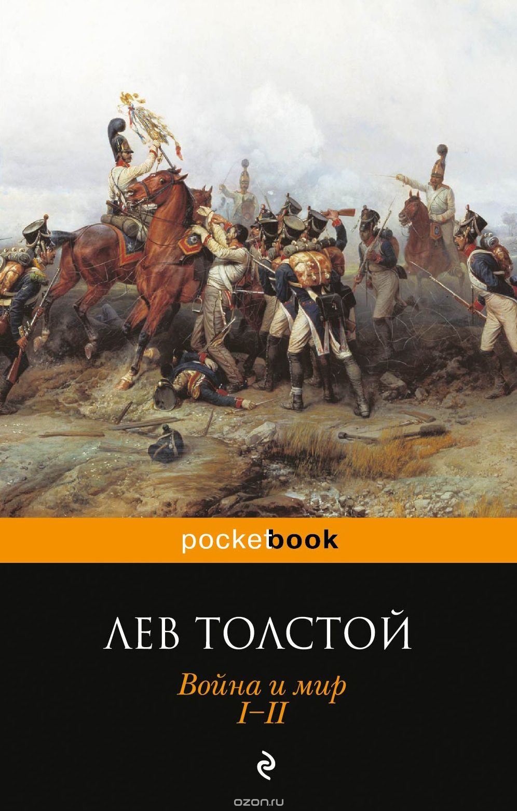

Жизнь, творческий путь, идейные искания Л.Н.Толстого по-прежнему увлекают умы наших современников, которые пытаются понять сану сущность творчества писателя и его учения. ВОЙНА И МИР - вершина творчества Л.Н.Толстого, как никакое другое произведение писателя отражает глубину его мироощущения и философии. Эта книга из разряда вечных, потому что она обо всем - о жизни и смерти, о любви и чести, о мужестве и героизме, о славе и подвиге, о воине и мире. Самый известный во всем мире роман гениального писателя вот уже третье столетие заставляет читателей сопереживать героям произведения. Роман о русской душе, о русском укладе жизни, о вечных вопросах, которые приходится решать каждому человеку наедине с собой. Все жизненные перипетии героев, происходящие на фоне исторических событии, произошедших в начале XIX века с Россией, на фоне кровавых событий войны 1812 года, обретают емкий философский смысл. Роман по глубине и охвату событий до сих пор стоит на первом месте во всей мировой литературе.
Рецензия
Рецензия на книгу Л. Н. Толстого — «Война и мир», написанная в рамках конкурса «Моя любимая книга» портала «Букля». Автор рецензии: Елена Фильченко. Первая работа Елены: Александр Дюма — «Три мушкетёра».
«Война и Мир»… Сразу обращаешь внимание на громкое название из двух противоположных слов. Что такое война? Смерть, боль, разруха, миллионы разбитых горем сердец… А мир? Мир — веселье, радость, пышные балы, бесконечные вальсы и мазурки, светское общество… Единственное, что объединяет эти понятия — величие одного и другого. Нельзя назвать войну пустым обычным событием. Это одно большое людское страдание, в котором участвуют и погибают миллиарды добрых людей. Почему тогда они участвуют в кровавых побоищах? Почему они добровольно идут на смерть, желая отдать жизнь Богу на поле боя и считая это достойной смертью, в то время как генералы сидят в тихих кабинетах и придумывают новые планы атак и наступлений без угрозы для жизни? Наверное, это правители враждующих стран во всём повинны. Поражение — виноват император, Победа — да здравствует император! Можно подумать, что великие деяния производят только известные и публичные люди. Ничуть! Лев Николаевич Толстой в романе-эпопее это доказывает. Войной, миром или чем-то еще не может управлять один человек. Всякому изменению способствуют массы. Массы сплоченных. Если говорить о войне, то это народы стран. Задача императоров — разжечь в сердцах своих солдат боевой пыл и не дать ему угаснуть. Чувство патриотизма, любви к своей Родине, гордость за императора движет народами!
В романе описывается жизнь и быт русского общества во время нашествий Наполеона. Видение ситуации с разных сторон помогает понять, как думали люди, в то время, чем они руководствовались, расклад их умов и чувств. На протяжении всего романа не отпускает контраст мира, балов, кутежей с войной, убийством и разрушением.
С возрастом книга воспринимается по-разному. Сначала может показаться скучновато, но пройдет 5-6 лет, ты откроешь снова томик «Войны и Мир» и получишь совсем новые ощущения и впечатления. Такое случается ввиду незнания жизни во время первого прочтения. И так будет с каждым разом. Роман на все времена. У Льва Николаевича был настоящий дар! Мало кто из писателей, сможет так написать. Могу ли я посоветовать книгу к прочтению? Конечно, да! Это одно из произведений, которое должен прочесть каждый, кто считает себя образованным человеком. Ну и хотя бы просто для того, чтобы немного узнать военной истории своей Родины, почитать про знаменитую Наташу Ростову, о которой часто говорят и теперь и приводят её в пример. Она считается до сей поры символом девичьей молодости, искренней любви и чистоты. Девочкам будет интересно почитать про любовь, которой в романе достаточно. А мальчикам про войну, храбрость и мужество, где тоже нет недостатка.
Честно говоря, боялась браться за это произведение. Всё-таки пугал и объём, и величие. Не являюсь любителем военных баталий, но я решилась! Нисколько не жалею! Получила море впечатлений и эмоций. Книга временами давалась с трудом, иногда бросала. Но всё равно тянуло вернуться и узнать, что же будет дальше. Классика несравнима ни с какими новинками.(сугубо моё личное мнение). Так что, читайте и получайте удовольствие!